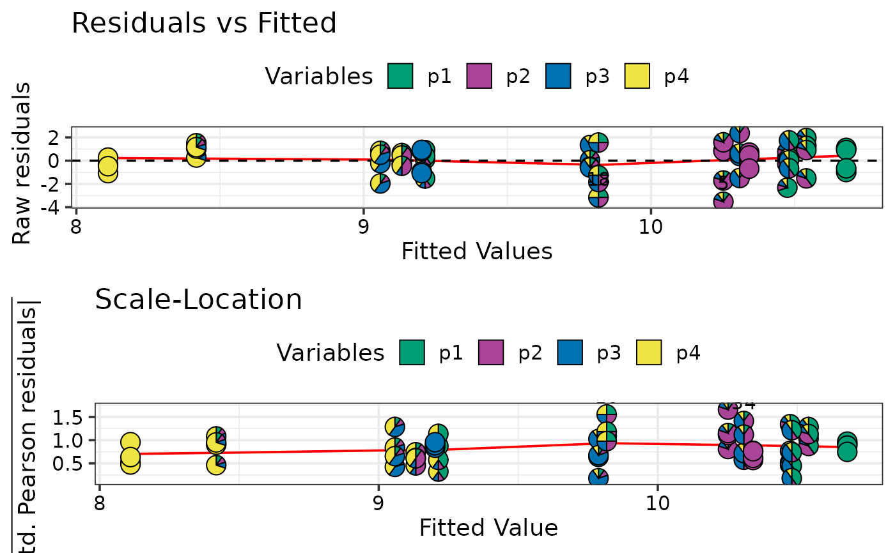
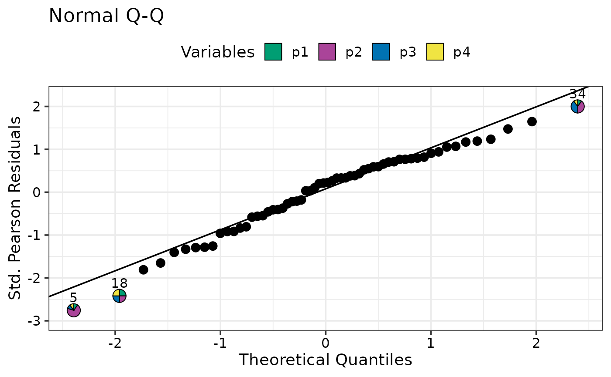
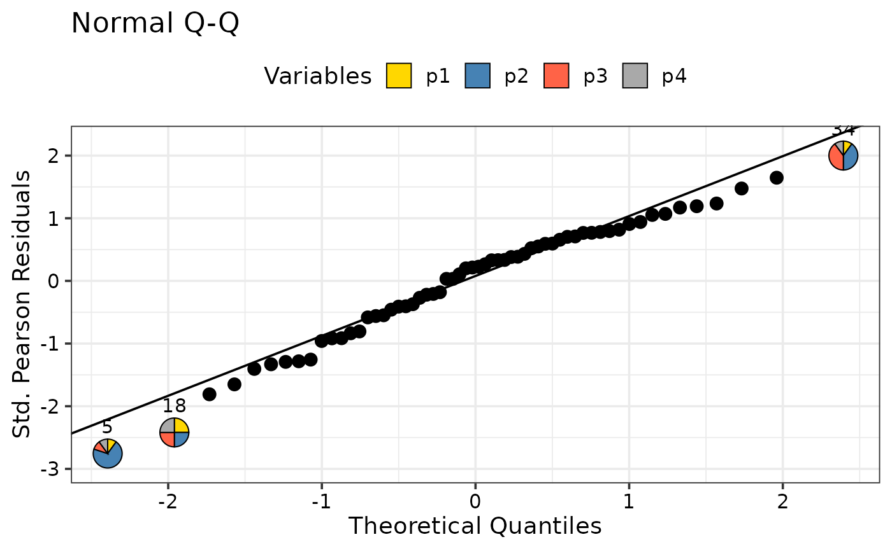
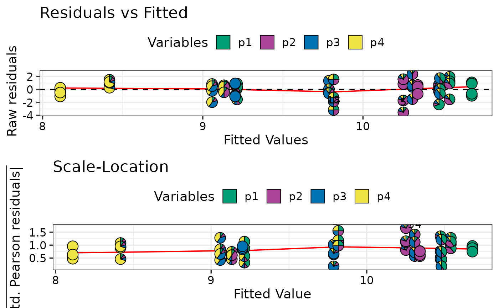
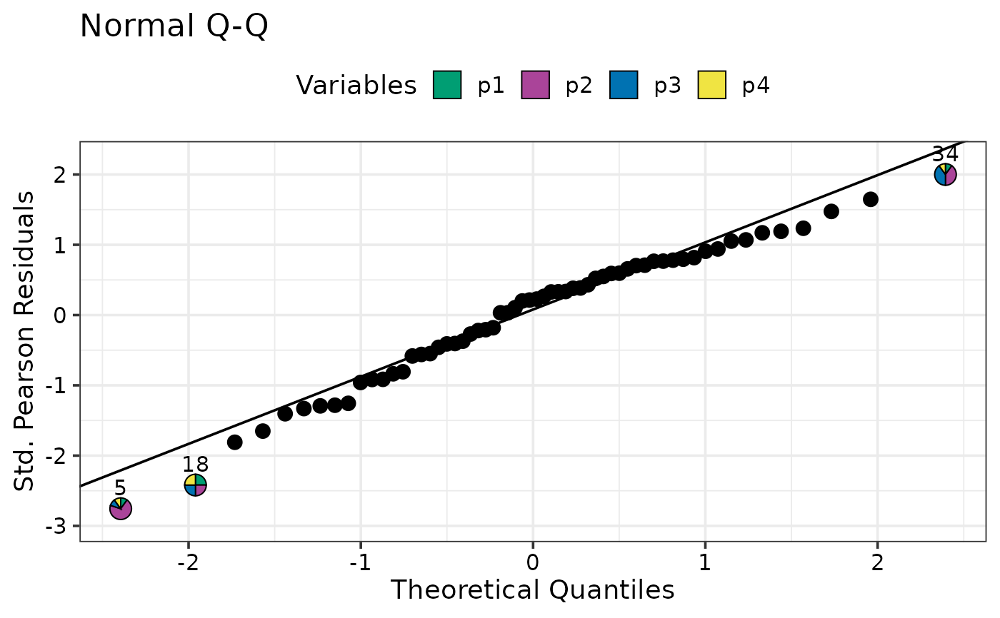
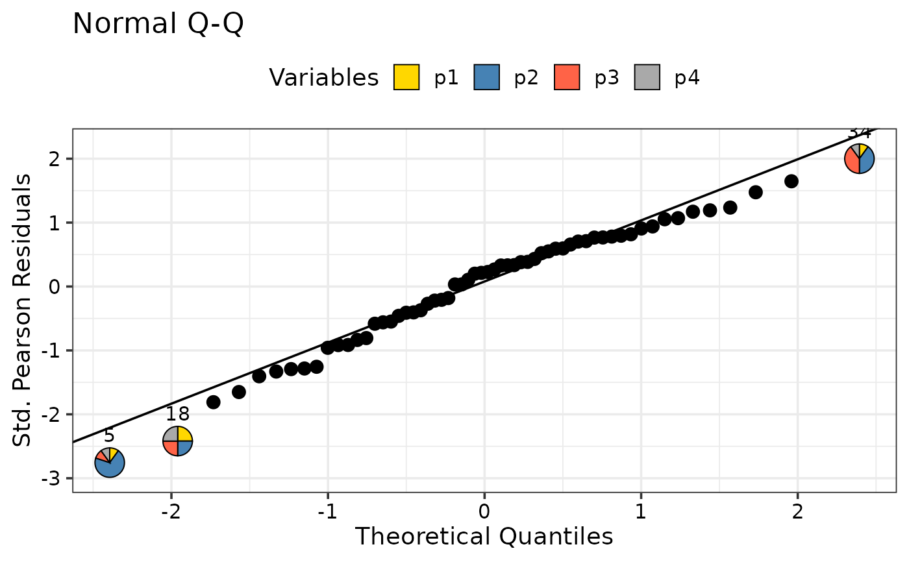

Regression diagnostics plots with pie-glyphs
model_diagnostics_plot.RdThis function accepts the output of the model_diagnostics_data
function and returns regression diagnostics plots for a model with points
replaced by pie-glyphs making it easier to track various data points
in the plots. This could be useful in models with compositional predictors
to quickly identify any observations with unusual residuals, hat values, etc.
Arguments
- data
A data-frame containing the model-fit statistics for a regression model. This data could be prepared using the `model_diagnostics_data` function, or be created manually by the user with the necessary information stored into the respective columns.
- which
A subset of the numbers 1 to 6, by default 1, 2, 3, and 5, referring to
1 - "Residuals vs Fitted", aka "Tukey-Anscombe" plot
2 - "Normal Q-Q" plot, an enhanced qqnorm(resid(.))
3 - "Scale-Location"
4 - "Cook's distance"
5 - "Residuals vs Leverage"
6 - "Cook's dist vs Lev./(1-Lev.)"
Note: If the specified model object does not inherit thelmclass, it might not be possible to create all diagnostics plots. In these cases, the user will be notified about any plots which can't be created.- prop
A character vector giving names of columns containing proportions to show in the pie-glyphs. If not specified, black points (geom_point) will be shown for each observation in the model. Note:
\code{prop}can be left blank and will be interpreted if model is aDiversity-Interactions (DI)model object fit using theDI()function from theDImodelspackage.- FG
A character vector of same length as
propspecifying the group each variable belongs to.- npoints
Number of points to be labelled in each plot, starting with the most extreme (those points with the highest absolute residuals or hat values).
- cook_levels
A numeric vector specifying levels of Cook's distance at which to draw contours.
- pie_radius
A numeric value specifying the radius (in cm) for the pie-glyphs.
- pie_colours
A character vector specifying the colours for the slices within the pie-glyphs.
- only_extremes
A logical value indicating whether to show pie-glyphs only for extreme observations (points with the highest absolute residuals or hat values).
- label_size
A numeric value specifying the size of the labels identifying extreme observations.
- points_size
A numeric value specifying the size of points (when pie-glyphs not shown) shown in the plots.
- nrow
Number of rows in which to arrange the final plot.
- ncol
Number of columns in which to arrange the final plot.
Value
A ggmultiplot (ggplot if single plot is returned) class object or data-frame (if `plot = FALSE`).
Examples
library(DImodels)
## Load data
data(sim1)
## Fit model
mod1 <- lm(response ~ 0 + (p1 + p2 + p3 + p4)^2, data = sim1)
## Get data for diagnostics plot
diagnostics_data <- model_diagnostics_data(mod1,
prop = c("p1", "p2", "p3", "p4"))
## Create diagnostics plots
diagnostics <- model_diagnostics_plot(diagnostics_data)
#> ✔ Created all plots.
print(diagnostics)
 ## Access individual plots
print(diagnostics[[1]])
## Access individual plots
print(diagnostics[[1]])
 print(diagnostics[[4]])
print(diagnostics[[4]])
 ## Change plot arrangement
model_diagnostics_plot(diagnostics_data, which = c(1, 3),
nrow = 2, ncol = 1)
#> ✔ Created all plots.

## Show only extreme points as pie-glyphs to avoid overplotting
model_diagnostics_plot(diagnostics_data, which = 2,
npoints = 3, only_extremes = TRUE)
#> ✔ Created all plots.

## Change size and colours of pie_glyphs
model_diagnostics_plot(diagnostics_data, which = 2,
npoints = 3, only_extremes = TRUE,
pie_radius = 0.3,
pie_colours = c("gold", "steelblue", "tomato", "darkgrey"))
#> ✔ Created all plots.

## Change plot arrangement
model_diagnostics_plot(diagnostics_data, which = c(1, 3),
nrow = 2, ncol = 1)
#> ✔ Created all plots.

## Show only extreme points as pie-glyphs to avoid overplotting
model_diagnostics_plot(diagnostics_data, which = 2,
npoints = 3, only_extremes = TRUE)
#> ✔ Created all plots.

## Change size and colours of pie_glyphs
model_diagnostics_plot(diagnostics_data, which = 2,
npoints = 3, only_extremes = TRUE,
pie_radius = 0.3,
pie_colours = c("gold", "steelblue", "tomato", "darkgrey"))
#> ✔ Created all plots.
